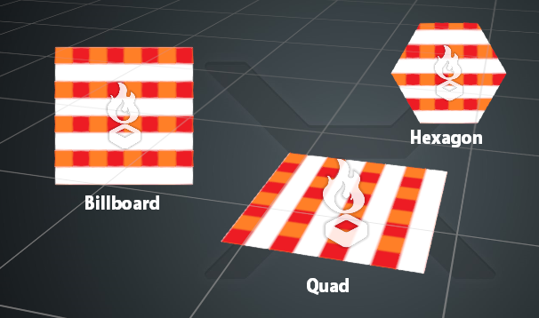

Particle shapes
Beginner Artist Programmer
Because particles are essentially only points in space, they have no defined shape. Instead, Stride draws shapes between the points.
The major difference between particle shapes is whether they always face the camera, or if they can rotate freely in 3D space.
Currently, emitters can only emit one type of shape at a time.
Billboards
Billboards always face the camera. They appear fixed in 3D space, so they don't change with the camera position.
Because they always face the camera, billboards support angular rotation only. This means they only rotate clockwise or counter-clockwise.
Hexagon
Hexagons are identical to billboards, but are hexagonal in shape. Like billboards, they always face the camera and support angular rotation only.
Quads
Quads are identical to billboards, but don't rotate to face the camera, and so support 3D orientation and rotation.
Stride draws billboard particles to the Size value in the particle effect properties. If you don't specify a size, Stride expands the quads to 1m x 1m.

Direction-aligned sprite
This sprite is billboard-aligned and stretched in the direction of the particle. You can set an initial direction for the particles with an initializer, or add an updater which writes particle speed as direction.
Ribbons and trails
See Ribbons and trails.